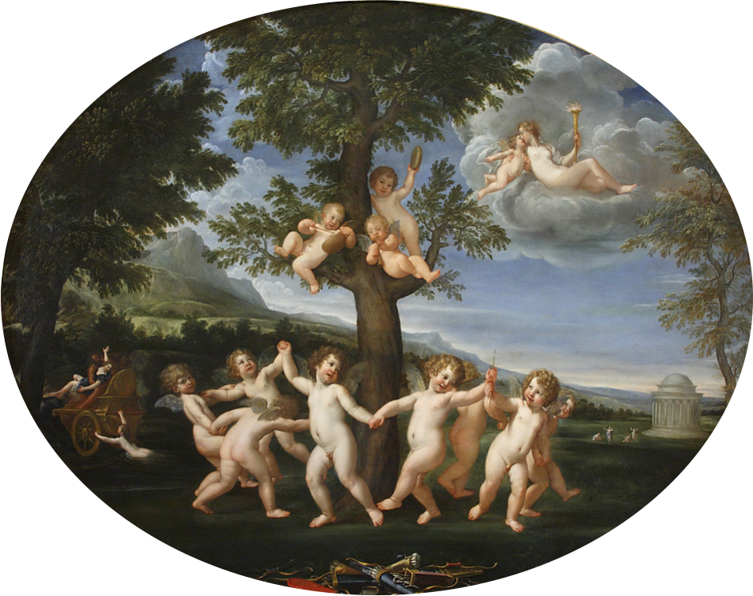

Autore: Francesco Albani
Titolo: Ballo di puttini, e vi è Venere sul Cielo, in Paese
Data: 1623–1625
Tecnica: Olio su rame
Dimensioni: cm 90 × 114
Collocazione attuale: Milano, Pinacoteca di Brera
Inventario: inv. 301
L’opera raffigura un festoso ballo di putti in un paesaggio idilliaco, con la figura di Venere che osserva la scena dal cielo. Rappresenta uno dei più celebri esempi dello stile elegante e narrativo di Albani, noto per le scene mitologiche e pastorali.